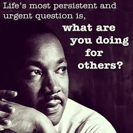
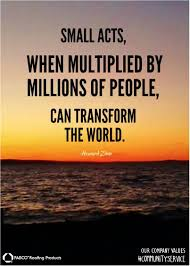
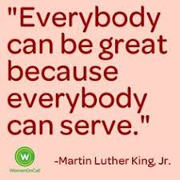
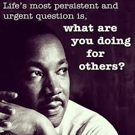
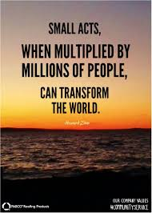
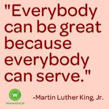

 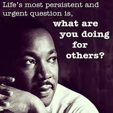
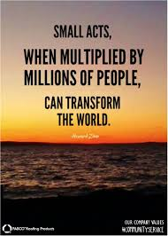
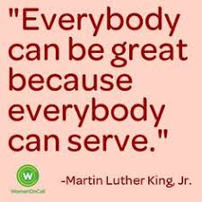
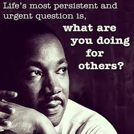
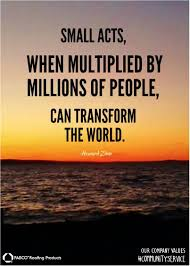
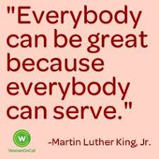
For the past 30 years, Master Muhammad Ayub a muslim , whose day job includes defusing bombs and putting out fires, has cycled from his office to the makeshift school to teach children from surrounding slums for free.where most of the children are christianThere are no walls, no roof and no chairs ─ and students dutifully rise to move en masse as the sun makes its way across the sky ─ it is their only source of lighting so they must follow it.In a country where education is underfunded and 24 million children remain out of school, grey-haired Ayub, 58, is hailed as a hero for providing his charges with hope for a better future.With its wide boulevards arranged in a grid, stunning views of the Margalla hills and impressive monuments, Islamabad was a world away from the young man's hometown. But, he recalls, "When I arrived, I was puzzled to see small children working in the streets, begging or cleaning cars or selling flowers and I wondered how come they have to do this in a posh capital city." One day he came across a boy washing cars in at the market place and asked him why he wasn't in school. Pupils take part in a lesson at a makeshift school in a park in Islamabad.─AFP"I asked him if wanted to study and he said 'yes'. Right there I gave him a notebook, a book, a pencil and an eraser and started teaching him," said Ayub, a high school graduate himself who left college before finishing his degree."The next day the boy brought another with him, and within a week there were 50 children in my class."He began by teaching them in a corner of the marketplace, but was shooed away by the shopkeepers.From there he moved to outside a government school but authorities asked him to pack up after influential people living nearby complained they were causing a nuisance.He finally shifted to his current location in the park, which is adjacent to some of the most expensive houses in the city valued at over $1 million ─ but also near a slum where minority Christian families reside.
Ayub however, says he isn't in it for the accolades. "I started this work because if these children do not get education, they will fall into wrong hands, become criminals or terrorists. I want them to get education and join police, army, become doctors and engineers." As he approaches 60, he says the time has come to build a lasting legacy so that his work can be carried forward. "Now I feel the need for building, because I want to teach computer systems to these children. I have bought some space here and built two rooms... I want to leave a facility behind after my death where these children continue to get the light of education."
the kids in the above image are the poor kids who are patrotic & obssesd to get education but with no money with there parents how will be they able to get high quality education? Me & my friends went there for community service but i was atonished by stories of the kids tears were in my eyes i didn't wanted tears in my eyes but eventually they were there because of the heart breaking stories of the kids who weren't even a teenagers.Imagine walking atleast 3-4km to get education from a government school where the infrastructure can't be defined in words,then walking back to his home & then going back to an open air school where the leader of the school is a firefighter and who want every poor children to be educated! with no money in his pockets and spending his 100$ pay on the poor kids.he gathered the poor kids from streets & who were labours in different parts of the city he is doing what he can for the future of these kids with help of NGO's & other helping people BUT still there isn't a proper teacher who can gave a hour to teach them!. what would you do with a PHD degree in a subject when u don't have humanity what answer would u give to your GOD!
Human beings are facing multifarious social problems in 21st century ranging from poverty to civic ignorance and lack of basic facilities of life. Pakistan faces severe problems in terms of health, education and economy. The country stands at 145th position at Human Development Index (HDI) and almost 50% of Pakistan’s population is deprived of basic necessities such as health, education and clean water. As per an HDR report about 11% of Pakistani population is facing an immediate threat of multidimensional poverty and 27.1% lives under severe poverty conditions.